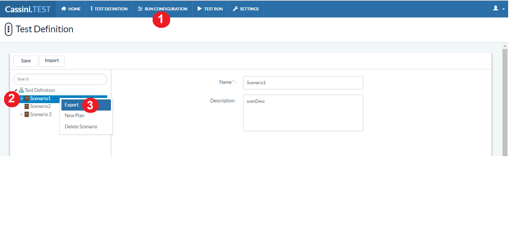

Run Configuration
Steps to run configuration
- Click on Test Definition
- Right click on Scenario
- Select Export (it will generate TestCasesExport Excel file)

- Save exported sheet in local and
- Add columns to sheet [Run Configuration (must be a Run Configuration name given in application), Result and Date]
- Add system properties to sheet if you want
- Enter values to added columns
- Save Excel sheet